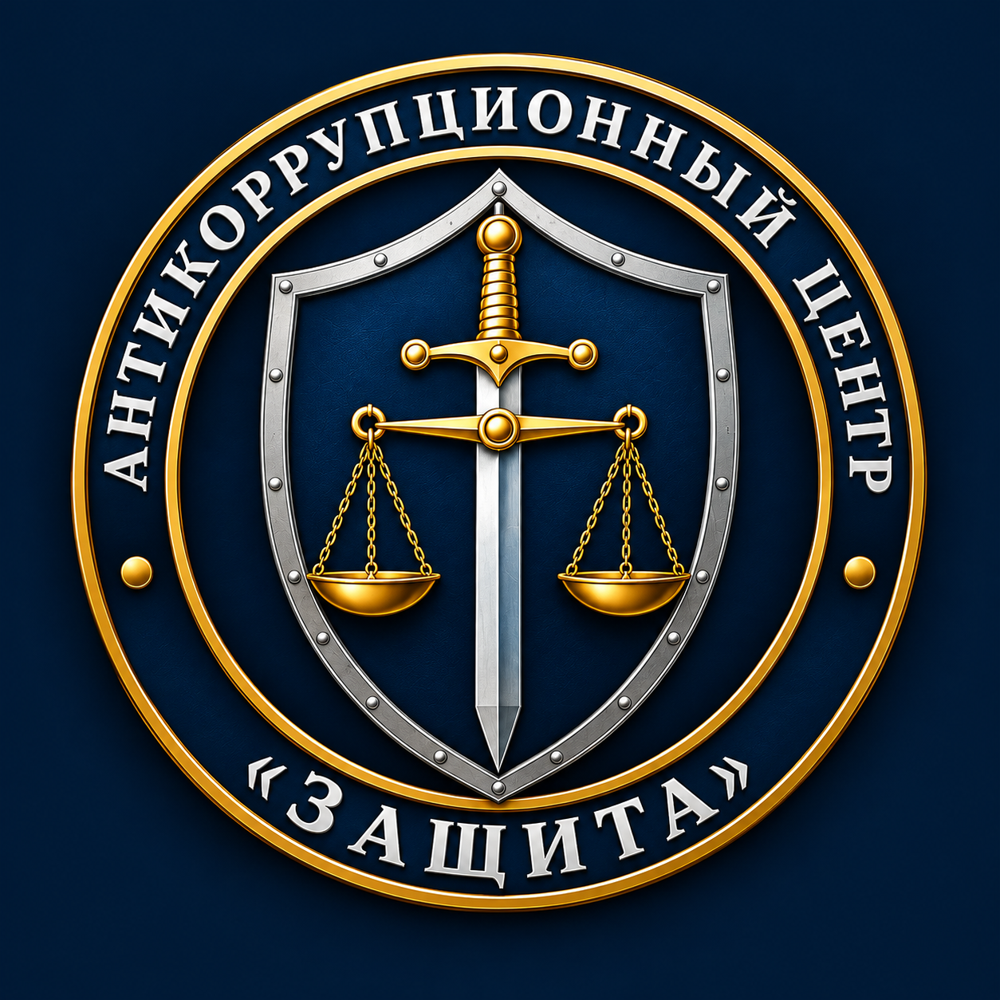

Дата последнего обновления: 12 октября 2026 г.
Настоящая Политика в отношении обработки персональных данных (далее — Политика) разработана Автономной некоммерческой организацией «Межрегиональный антикоррупционный центр „Защита"» (далее — Оператор) в соответствии с Федеральным законом от 27.07.2006 № 152-ФЗ «О персональных данных».
Политика определяет порядок обработки персональных данных и меры по обеспечению их безопасности, предпринимаемые Оператором. Политика действует в отношении всех персональных данных, которые Оператор может получить от субъектов персональных данных через официальный сайт, формы обратной связи, а также в ходе личного взаимодействия (в том числе при работе общественных приёмных).
Персональные данные — любая информация, относящаяся к прямо или косвенно определенному или определяемому физическому лицу (субъекту персональных данных).
Обработка персональных данных — любое действие (операция) или совокупность действий, совершаемых с использованием средств автоматизации или без их использования с персональными данными, включая сбор, запись, систематизацию, накопление, хранение, уточнение, извлечение, использование, передачу, обезличивание, блокирование, удаление, уничтожение.
Оператор — АНО «МАЦ „Защита"», самостоятельно организующее и (или) осуществляющее обработку персональных данных.
Оператор может обрабатывать следующие категории персональных данных, предоставляемых субъектом добровольно:
Важно: Оператор не обрабатывает специальные категории персональных данных (касающиеся расовой, национальной принадлежности, политических взглядов, религиозных или философских убеждений, состояния здоровья, интимной жизни), а также биометрические персональные данные.
Служебная информация и документы: Мы обеспечиваем режим строгой конфиденциальности в отношении внутренних документов, переписки, а также материалов проверок. Мы не публикуем ваши обращения, сканы документов или детали дел без вашего согласия.
Оператор обрабатывает персональные данные в следующих целях:
Обработка персональных данных осуществляется на основании:
Обработка персональных данных осуществляется с согласия субъекта, выраженного путём проставления отметки в соответствующем поле при отправке формы на сайте.
Оператор принимает необходимые правовые, организационные и технические меры для защиты персональных данных от неправомерного доступа, уничтожения, изменения, блокирования, копирования и распространения.
Срок обработки персональных данных определяется достижением целей обработки, если иной срок не предусмотрен законодательством Российской Федерации или соглашением с субъектом.
Оператор прекращает обработку персональных данных и уничтожает их в случае достижения целей обработки, истечения срока действия согласия или отзыва согласия субъектом, если иное не предусмотрено законодательством.
Оператор не передаёт персональные данные третьим лицам, за исключением случаев:
Субъект персональных данных имеет право:
По всем вопросам, связанным с обработкой персональных данных, а также для реализации своих прав субъект может обратиться к Оператору:
Оператор вправе вносить изменения в настоящую Политику. Актуальная версия всегда доступна на данной странице. Дата последнего обновления указана в начале документа. Продолжение использования сайта после внесения изменений означает согласие субъекта с новой редакцией Политики.